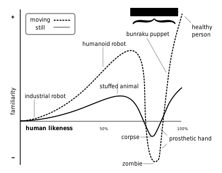
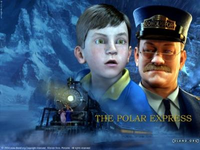

36
The X is a hypothesis in the field of aesthetics which holds that when features look and move almost, but not exactly, like natural beings, it produces a response of repulsion among some observers. The term refers to the dip in the graph of the comfort level of people in viewing/observing animation against how 'life-like' the animation appears to be. An example is the movie 'The Polar Express' , which garnered negative reviews from audiences because they found the animation to be 'so real, it was eerie'. What term?

